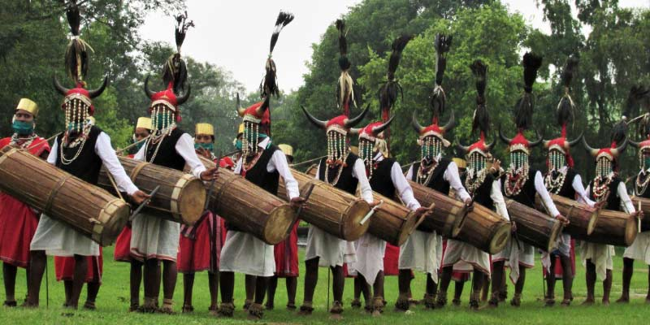

Welcome to Chattisgarh!

Chhattisgarh, located in central India, is known for its rich cultural heritage, tribal diversity, and natural landscapes. The culture of Chhattisgarh is deeply rooted in its ancient traditions, folk arts, festivals, and culinary delights. Festivals such as Bastar Dussehra, Madai, and Hareli are celebrated with great enthusiasm, showcasing the state's vibrant cultural traditions and community spirit.
Chhattisgarhi cuisine is known for its flavorsome dishes, including specialties like Farra, Chousera Roti, and Sabudana Khichdi, which reflect the region's agricultural abundance and traditional cooking techniques. The cuisine varies across the state, influenced by its diverse tribal communities and local ingredients.
Music and dance play a significant role in Chhattisgarh's cultural landscape, with folk forms like Pandwani, Raut Nacha, and Karma Dance reflecting the cultural narratives, myths, and rituals of the region's tribal communities. These performances are marked by colorful attire, rhythmic beats, and storytelling elements that captivate audiences.
Chhattisgarh's architectural heritage includes ancient temples like the Bhoramdeo Temple and Sirpur Group of Monuments, which highlight the state's historical and religious significance. These sites attract history enthusiasts and pilgrims alike, showcasing intricate stone carvings and architectural styles from different periods.
The state is also renowned for its vibrant arts and crafts, including Dhokra metalwork, Pithora paintings, and Bastar handicrafts, which demonstrate the artistic skills and cultural richness of its tribal artisans. These crafts not only serve as decorative items but also have ritualistic and cultural significance within the communities.